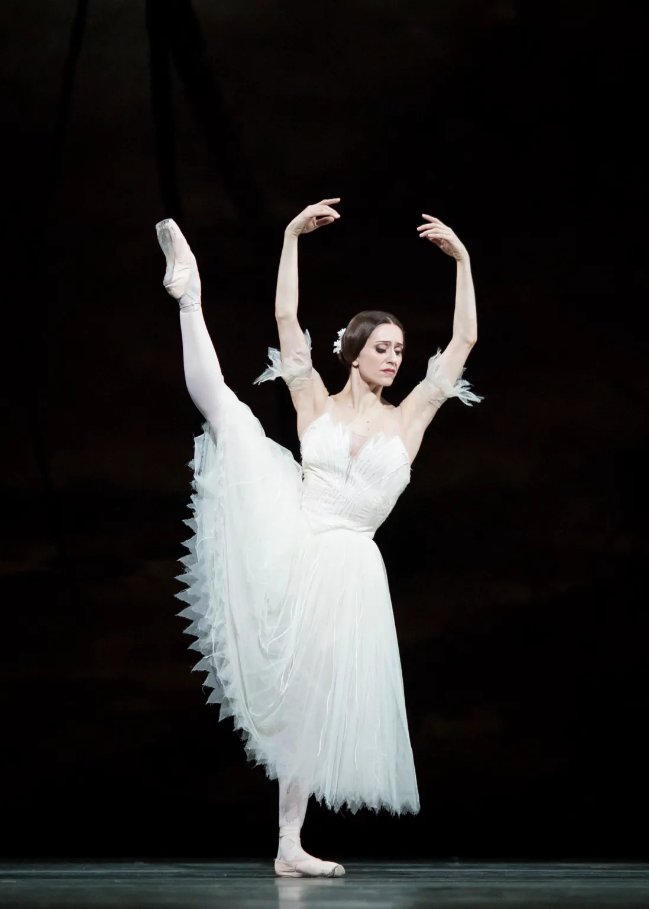

Nascida em 23 de março de 1982, em Buenos Aires, Argentina, é considerada uma das maiores bailarinas da atualidade e um dos nomes mais brilhantes da história recente do ballet clássico. Desde muito pequena demonstrou uma sensibilidade especial para a dança: começou as aulas aos três anos e, aos seis, foi aceita na prestigiada Escola de Ballet do Teatro Colón, uma das instituições formadoras mais respeitadas da América Latina.
Sua evolução foi rápida e impressionante. Com apenas quatorze anos, tornou-se membro do corpo de baile do Teatro Colón, onde ganhou maturidade artística e técnica ao interpretar papéis desafiadores. Seu talento chamou a atenção internacional, e aos quinze anos participou de uma audição para a Royal Ballet School, em Londres. Mesmo tão jovem e sem falar inglês, sua precisão, musicalidade e força interpretativa atraíram os diretores da escola, que a convidaram para continuar sua formação na Inglaterra.
Aos dezesseis anos, Marianela recebeu o contrato para integrar o The Royal Ballet, uma das companhias mais importantes e tradicionais do mundo. A partir daí, sua trajetória tornou-se extraordinária: em 2001 foi promovida a First Soloist, e, em 2002, aos vinte anos, alcançou o posto de Bailarina Principal, o mais alto dentro da hierarquia da companhia.
Desde então, vem construindo uma das carreiras mais respeitadas do cenário internacional. Sua versatilidade permite transitar com perfeição entre o repertório clássico e o contemporâneo, sempre imprimindo profundidade emocional e rigor técnico. É amplamente reconhecida por interpretações emblemáticas como Odette e Odile em O Lago dos Cisnes, Aurora em A Bela Adormecida, Giselle em Giselle, Kitri em Dom Quixote, Julieta em Romeu e Julieta, além de diversos papéis em obras de coreógrafos contemporâneos renomados.
Crítica e público celebram constantemente sua presença magnética no palco, sua técnica firme, seu equilíbrio impecável, a leveza dos saltos e a naturalidade com que preenche cada personagem. Marianela é descrita por muitos como uma artista completa, capaz de unir virtuosismo técnico e interpretação sensível, resultando em apresentações memoráveis que emocionam plateias no mundo inteiro.
Sua excelência artística lhe rendeu inúmeros prêmios ao longo da carreira, entre eles o Laurence Olivier Award, o Prêmio Konex e o María Ruanova, além de várias distinções da crítica internacional. Em 2025, recebeu a honraria de Officer of the Order of the British Empire (OBE), concedida pelo Reino Unido, como reconhecimento de sua contribuição excepcional para o mundo da dança.
Mesmo após décadas de carreira, Marianela Núñez segue como uma figura essencial no ballet mundial. Sua dedicação, disciplina, elegância e amor pela arte inspiram bailarinos de todas as idades, especialmente jovens da América Latina, que veem em sua trajetória um exemplo real de que talento, paixão e determinação podem abrir portas para os maiores palcos do mundo.